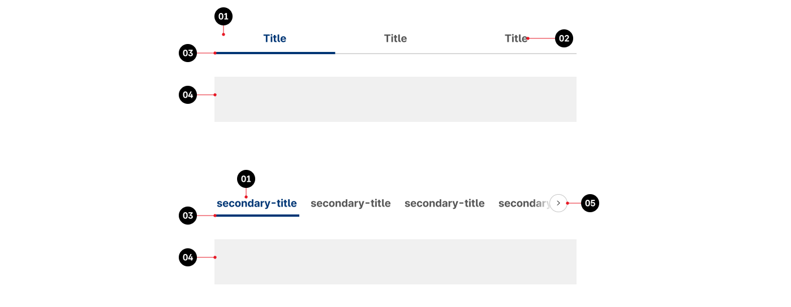
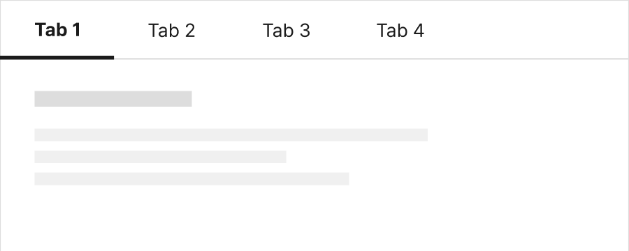
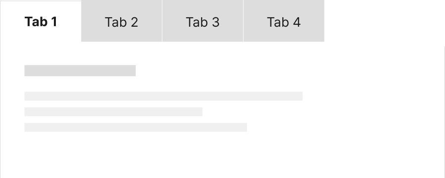
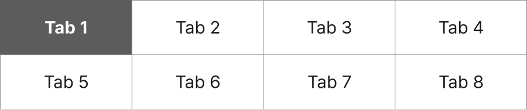
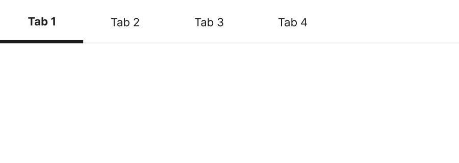

<!doctype html>
<html lang="ko">

<head>
	<meta charset="UTF-8">
	<meta http-equiv="X-UA-Compatible" content="IE=edge" />
	<meta name="viewport"
		content="width=device-width, initial-scale=1.0, maximum-scale=1.0, minimum-scale=1.0, user-scalable=no" />
	<meta name="keywords" content="" />
	<meta name="description" content="" />
	<meta name="format-detection" content="telephone=no" />
	<link rel="apple-touch-icon" sizes="180x180" href="../../../resources/img/guide/favicon_180.png">
	<link rel="icon" type="image/png" sizes="512x512" href="../../../resources/img/guide/favicon_512.png">
	<link rel="icon" type="image/png" sizes="192x192"  href="../../../resources/img/guide/favicon_192.png">
	<link rel="icon" type="image/png" sizes="32x32" href="../../../resources/img/guide/favicon_32.png">
	<title>탭 (Tab) | 컴포넌트 - KRDS</title>
	<link href="../../../resources/css/guide_css.css" type="text/css" rel="stylesheet" />
	<link href="../../../resources/css/guide/prism.css" type="text/css" rel="stylesheet" />
</head>

<body>
	<div id="g-wrap">
		<!-- 상단 배너영역  -->
		<div id="g-header-top" class="includeJsGuide" data-include-file="../layout/header-top.html"></div>
		<!-- //상단 배너영역  -->
		
		<!-- 헤더 영역 -->
		<header id="g-header" class="includeJsGuide" data-include-file="../layout/guide_header.html"></header>
		<!-- //헤더 영역 -->

		<!-- 컨테이너 영역 -->
		<div id="g-container">
			<!-- 왼쪽메뉴 영역 -->
			<div class="g-aside includeJsGuide" data-include-file="../layout/guide_aside.html"></div>
			<!-- //왼쪽메뉴 영역 -->

			<!-- 컨텐츠 영역 -->
			<div class="g-content">
				<!-- 제목 -->
				<div class="g-title-area">
					<h2 class="g-heading-l"><span>컴포넌트</span><strong>탭 <span class="sub">(Tab)</span></strong></h2>
					<p class="g-desc">
						탭은 버튼을 눌러 상호배타적인 여러 개의 콘텐츠 섹션을 전환할 수
						있는 컴포넌트이다. 콘텐츠 섹션은 동일한 영역 내에서 전환되기 때문에
						정보를 탐색하는 맥락을 유지할 수 있고 작은 공간에 많은 양의 콘텐츠를
						효과적으로 표현할 수 있다.
					</p>
				</div>
				<!-- //제목 -->

				<!-- 설명 -->
				<div class="g-description-area">
					<div class="g-conts-area">
						<h3 class="g-heading-m">용례</h3>

						<div class="g-conts-area">
							<h4 class="g-heading-s">사용하기 적합한 경우</h4>
							<div class="g-conts-wrap">
								<ul class="info-list decimal">
									<li>
										<strong>대부분의 사용자에게 첫 번째 콘텐츠 섹션이 가장 중요하거나 유용한 정보를 전달하는 경우</strong>
									</li>
									<li>
										<strong>사용자가 한 번에 두 개 이상의 콘텐츠 섹션을 확인할 필요가 없는 경우</strong>
									</li>
									<li>
										<strong>사용자가 콘텐츠 섹션을 빠르게 전환해야 하는 경우</strong>
									</li>
								</ul>
							</div>

							<div class="g-conts-area">
								<h4 class="g-heading-s">사용하기 적합하지 않은 경우</h4>
								<div class="g-conts-wrap">
									<ul class="info-list decimal">
										<li>
											<strong>서로 다른 탭에 속한 콘텐츠 섹션의 정보를 비교해야 하는 경우</strong>
											<p class="info-txt">
												사용자는 한 탭 패널의 정보를 암기한 상태에서 다른 패널로 전환한 후, 기억에 의존하여 정보를 비교해야
												하기 때문에 적합하지 않다.
											</p>
										</li>
										<li>
											<strong>콘텐츠 섹션을 이해하는 데 순서가 중요한 경우</strong>
											<p class="info-txt">
												각각의 콘텐츠 섹션을 이해하기 위해 모든 내용을 순서대로 읽어야 하는 경우에는 단계 마법사와 같은
												패턴이 적합하다. 단계 마법사는 첫 번째 콘텐츠 섹션에서부터 순차적으로 작업을 완료해야 다음 단계의
												콘텐츠 섹션을 확인할 수 있는 반면, 탭은 사용자가 임의로 콘텐츠 탐색 순서를 결정할 수 있다.

											</p>
										</li>
									</ul>
								</div>
							</div>
						</div>
					</div>

					<div class="g-conts-area">
						<h3 class="g-heading-m">유형</h3>
						<div class="g-conts-area">
							<h4 class="g-heading-s">수평 탭</h4>
							<p class="info-txt">탭이 좌에서 우의 순서로 제공되며 탭과 탭 패널이 상/하로 배치된다.</p>

						</div>
						<div class="g-conts-area">
							<h4 class="g-heading-s">수직 탭</h4>
							<p class="info-txt">탭이 상에서 하의 순서로 제공되며 탭과 탭 패널이 좌/우로 배치된다</p>
						</div>
					</div>

					<div class="g-conts-area">
						<h3 class="g-heading-m">구조</h3>
						<div class="g-conts-area">
							<div class="g-img-wrap">
								<div></div>
							</div>
							<ol class="info-list ordered fraction">
								<li><span class="num">1. </span><strong>탭: </strong>사용자와의 상호작용에 반응하는 박스 영역으로 실행 시 각 탭에
									상응하는 콘텐츠가 탭 패널에
									표시됨</li>
								<li><span class="num">2. </span><strong>탭 레이블: </strong>표시할 탭 패널의 제목</li>
								<li><span class="num">3. </span><strong>인디케이터: </strong>탭이 선택된 상태임을 알려주는 시각적인 식별자</li>
								<li><span class="num">4. </span><strong>탭 패널: </strong>콘텐츠가 표시되는 영역</li>
								<li><span class="num">5. </span><strong>탭 탐색 버튼(선택): </strong>시각적으로 표시되지 않는 나머지 탭을 탐색하기
									위한 버튼</li>
							</ol>
						</div>
					</div>

					<div class="g-conts-area">
						<h3 class="g-heading-m">사용성 가이드라인</h3>
						<div class="g-conts-area">
							<ul class="info-list decimal">
								<li>
									<strong>사용자가 탭과 탭 패널 간 관계를 명확하게 인지할 수
										있도록 표현한다.</strong>
									<p class="info-txt">
										탭과 탭 패널을 인접한 영역에 배치하여 탭 패널이 선택된 탭에 관련된 콘텐츠임을 인지할 수 있도록 해야
										한다. 탭과 탭 패널의 배경색을 동일하게 지정하면 두 요소 간 관련성을 시각적으로 보다 강조할 수 있다.
									</p>
									<div class="g-img-wrap">
										<p class="caption">[모범 사례 1]</p>
										<div></div>
									</div>
									<div class="g-img-wrap">
										<p class="caption">[모범 사례 2]</p>
										<div></div>
									</div>
								</li>
								<li>
									<strong>탭 레이블은 표시할 콘텐츠 섹션의 정보를 예측할 수 있는
										명확한 내용으로 제공한다.</strong>
									<p class="info-txt">
										탭은 선택된 탭을 제외한 나머지 탭의 콘텐츠를 숨기기 때문에 레이블이 명확하지 않으면 사용자 탭을
										클릭해야 하는지 알 수 없어 필요한 정보가 포함된 탭을 놓칠 수 있다.
									</p>
								</li>
								<li>
									<strong>탭에 사용 불가 상태를 사용하지 않는다.</strong>
									<p class="info-txt">
										탭에 표시될 콘텐츠가 없는 경우, 해당 탭을 삭제하거나 탭을 선택했을 때 패널에 콘텐츠가 없는 이유에
										대한 설명을 제공하여 사용자가 혼동을 느끼지 않도록 해야 한다.
									</p>
									<div class="g-img-wrap">
										<p class="caption">[피해야 할 사례]</p>
										<div></div>
									</div>
								</li>
								<li>
									<strong>여러 개의 탭을 중첩하는 경우, 서로 다른 수준의 탭이
										명확하게 구분되도록 표현한다.</strong>
									<p class="info-txt">
										탭은 콘텐츠를 숨겨둔 상태에서 사용자가 콘텐츠의 표시 여부를 선택해야 하기 때문에 사용자의 인지적
										부담을 더욱 증가시킬 수 있어 여러 개의 탭을 중첩하는 것은 바람직하지 않다. 그러나 불가피하게 탭을
										중첩해야 하는 경우 중첩된 탭의 스타일이 시각적으로 분명하게 구분되어야 한다.
									</p>
									<div class="g-img-wrap">
										<p class="caption">[모범 사례]</p>
										<div></div>
									</div>
									<div class="g-img-wrap">
										<p class="caption">[피해야 할 사례]</p>
										<div></div>
									</div>
								</li>
								<li>
									<strong>수직 탭은 탭을 수평으로 배치하기 어려운 경우에
										사용한다.</strong>
									<p class="info-txt">
										많은 수의 탭을 별도의 탐색 컨트롤을 사용하지 않고 한 번에 확인하는 것이 중요한 경우 수직 탭을 사용할
										수 있다. 또한 수직 탭은 수평 탭의 높이만큼 공간을 절약할 수 있으므로, 콘텐츠 섹션의 높이가 고정적이고
										탭 영역의 높이에 제한이 있는 경우에 사용하기 적합하다. 그러나 탭이 탭 패널의 상단에 배치되어 있는
										것이 사용자에게 더 익숙하므로 수직 탭을 사용할 때에는 탭과 탭 패널 간 관계를 표현하는 데 더 주의를
										기울여야 한다.
									</p>
								</li>
								<li>
									<strong>탭의 항목 수가 많아 일렬로 배치하기 어려운 경우 별도의
										탐색 컨트롤을 제공한다.</strong>
									<p class="info-txt">
										탭이 6개를 초과하면 사용자의 인지적인 부담을 증가시키고 레이아웃에 문제가 발생할 수 있다. 모든 탭이
										영역의 너비에서 넘치지 않고 표시될 수 없는 경우, 숨겨진 탭을 탐색할 수 있는 팝업 버튼을 제공하거나
										탭을 좌/우로 이동할 수 있는 컨트롤 요소를 제공해야 한다.
									</p>
									<div class="g-img-wrap">
										<p class="caption">[모범 사례]</p>
										<div></div>
									</div>
									<div class="g-img-wrap">
										<p class="caption">[피해야 할 사례]</p>
										<div></div>
									</div>
								</li>
							</ul>
						</div>
					</div>

					<div class="g-conts-area">
						<h3 class="g-heading-m">접근성 가이드라인</h3>
						<div class="g-conts-area">
							<ul class="info-list decimal">
								<li>
									<strong>탭의 선택 상태를 색상으로만 구분하지 않는다.</strong>
									<p class="info-txt">
										탭의 선택 상태를 색상 이외의 수단으로 구분할 수 있는 시각적 단서를 제공해야 한다. 밑줄 제공, 1px
										이상의 테두리 차이, 식별자 제공 등의 방법으로 크기나 형태 차원에서 정보를 구분하는 방법을 사용할 수
										있다.
									</p>
									<ul class="info-list dash">
										<li>KWCAG 2.2 색에 무관한 콘텐츠 인식</li>
										<li>WCAG 2.1 Use of Color (A)</li>
									</ul>
									<div class="g-img-wrap">
										<p class="caption">[모범 사례]</p>
										<div></div>
									</div>
									<div class="g-img-wrap">
										<p class="caption">[피해야 할 사례]</p>
										<div></div>
									</div>
								</li>
								<li>
									<strong>탭을 키보드로 탐색하고 실행할 수 있도록 한다.</strong>
									<p class="info-txt">
										탭은 키보드로 접근하여 조작할 수 있어야 한다.
									</p>
									<ul class="info-list dash">
										<li>KWCAG 2.2 키보드 사용 보장</li>
										<li>WCAG 2.1 Keyboard (A)</li>
										<li>WCAG 2.1 No Keyboard Trap (A)</li>
									</ul>
								</li>
								<li>
									<strong>탭의 키보드 초점이 명확하게 표시되도록 한다.</strong>
									<p class="info-txt">
										모든 탭은 초점을 받은 상태가 시각적으로 명확하게 구분되어야 한다.
									</p>
									<ul class="info-list dash">
										<li>KWCAG 2.2 초점 이동</li>
										<li>WCAG 2.1 Focus Visible (AA)</li>
										<li>WCAG 2.1 Non-text Contrast (AA)</li>
									</ul>
								</li>
								<li>
									<strong>탭의 선택 상태를 스크린 리더로 확인할 수 있도록 한다.</strong>
									<p class="info-txt">
										탭 레이블과 탭의 선택 상태를 텍스트로 제공하여 스크린 리더에서 정보를 인지할 수 있도록 해야 한다. 탭
										버튼에 role=”tab”로 역할을 부여하고 선택된 탭에 aria-selected=”true”로 상태 정보를 전달하거나
										title=”현재 탭”, title=”선택됨”으로 선택 상태에 대한 정보를 제공할 수 있다.
									</p>
									<ul class="info-list dash">
										<li>KWCAG 2.2 적절한 대체 텍스트 제공</li>
										<li>WCAG 2.1 Name, Role, Value (A)</li>
									</ul>
								</li>
								<li>
									<strong>탭과 패널의 역할 및 관계를 스크린 리더로 확인할 수
										있도록 한다.</strong>
									<p class="info-txt">
										탭 버튼 목록 영역은 role=”tablist”, 탭 버튼은 role=”tab”, 탭 패널은 role=”tabpanel”로 역할을
										부여한다. 그런 다음 탭 버튼과 탭 패널에 각각 id 속성과 속성값을 부여한 다음, 탭 버튼에는 ariacontrols="[상응하는 탭 패널
										id 속성값]”, aria-labelledby="[상응하는 탭 버튼 id 속성값]”을 설정하여
										탭과 패널 간 연결 관계를 프로그램적으로 전달할 수 있다.
									</p>
									<ul class="info-list dash">
										<li>KWCAG 2.2 콘텐츠의 선형화</li>
										<li>WCAG 2.1 Info and Relationships (A)</li>
										<li>WCAG 2.1 Name, Role, Value (A)</li>
									</ul>
								</li>
							</ul>
						</div>
					</div>

					<div class="g-conts-area">
						<h3 class="g-heading-m">상호작용 가이드라인</h3>
						<div class="g-conts-area">
							<h4 class="g-heading-s">탭 탐색</h4>
							<!-- table list -->
							<div class="tbl-wrap">
								<table class="tbl col data">
									<caption>상호작용 가이드라인 탭 탐색에 대한 표로 구분/설명으로 구성되어있으며 구분 항목은 Tab, Shift + Tab 로 구성되어있음
									</caption>
									<colgroup>
										<col style="width: 15%">
										<col>
									</colgroup>
									<thead>
										<tr>
											<th scope="col">구분</th>
											<th scope="col">설명</th>
										</tr>
									</thead>
									<tbody>
										<tr>
											<th scope="row">Tab, Shift + Tab</th>
											<td>
												모든 탭은 Tab, Shift + Tab 키를 눌렀을 때 접근할 수 있어야 한다.
											</td>
										</tr>
									</tbody>
								</table>
							</div>
							<!-- //table list -->
						</div>
						<div class="g-conts-area">
							<h4 class="g-heading-s">탭 패널 전환</h4>
							<!-- table list -->
							<div class="tbl-wrap">
								<table class="tbl col data">
									<caption>상호작용 가이드라인 탭 패널 전환에 대한 표로 이동에 대한 표로 구분/설명으로 구성되어있으며 구분 항목은 Click, Enter 로
										구성되어있음</caption>
									<colgroup>
										<col style="width: 15%">
										<col>
									</colgroup>
									<thead>
										<tr>
											<th scope="col">구분</th>
											<th scope="col">설명</th>
										</tr>
									</thead>
									<tbody>
										<tr>
											<th scope="row">Click</th>
											<td>
												탭을 Click 하면 탭이 선택되면서 관련 콘텐츠로 탭 패널의 정보가 전환된다.
											</td>
										</tr>
										<tr>
											<th scope="row">Enter</th>
											<td>
												탭에 초점이 있는 상태에서 Enter 키를 누르면 탭이 선택되면서 관련 콘텐츠로 탭 패널의 정보가 전환된다.
											</td>
										</tr>
									</tbody>
								</table>
							</div>
							<!-- //table list -->
						</div>

					</div>

				</div>
				<!-- //설명 -->

				<!-- 예시 -->
				<div class="g-example-area">
					<div class="g-conts-area">
						<h3 class="g-heading-m">마크업 예시</h3>
						<div class="g-conts-area">
							<h4 class="g-heading-s">기본</h4>
							<div class="g-example-wrap">
								<div class="g-example ex-full">
									<!-- contents -->
									<div class="tab-area layer">
										<!-- tab list -->
										<div class="tab line full">
											<ul role="tablist">
												<li id="tab_login_01" aria-selected="true" aria-controls="panel_login_01"
												    class="active"><button type="button" class="btn-tab">일반 회원 로그인 <i
														class="sr-only created"> 선택됨</i></button></li>
												<li id="tab_login_02" aria-selected="false" aria-controls="panel_login_02"><button
														type="button" class="btn-tab">기관 회원 로그인</button></li>
											</ul>
										</div>
										<!-- //tab list -->
										
										<!-- tab contents -->
										<div class="tab-conts-wrap">
											<section id="panel_login_01" role="tabpanel" aria-labelledby="tab_login_01"
											         class="tab-conts active">
												<h3 class="sr-only">일반 회원 로그인</h3>
												<p class="text-gray-70">
													일반 개인 회원을 위한 국립중앙도서관 통합 로그인입니다. <br class="br">
													로그인을 하시면 보다 더 많은 정보와 서비스를 이용하실 수 있습니다.
												</p>
												<!-- 로그인 폼 -->
												<div class="login-form-area type-tab">
													<div class="login-wrap">
														<div class="in">
															<fieldset>
																<legend>로그인 폼</legend>
																<div class="fieldset">
																	<div class="form-group">
																		<div class="form-tit">
																			<label for="login_id">아이디</label>
																		</div>
																		<div class="form-conts">
																			<input type="text" id="login_id" class="form-control"
																			       placeholder="영문 소문자">
																		</div>
																	</div>
																	<div class="form-group">
																		<div class="form-tit">
																			<label for="login_pw">비밀번호</label>
																		</div>
																		<div class="form-conts btn-ico-wrap">
																			<input type="password" id="login_pw" class="form-control"
																			       placeholder="8-12자의 영문자, 숫자, 특수문자 조합">
																			<button type="button" class="btn btn-ico ico-pw-visible md">
																				<span class="sr-only">입력한 비밀번호 보기</span>
																			</button>
																		</div>
																	</div>
																	<div class="form-group chk-area">
																		<div class="form-check">
																			<input type="checkbox" name="save_id" id="save_id">
																			<label for="save_id">아이디 저장</label>
																		</div>
																	</div>
																	<div class="form-group">
																		<button type="submit" class="btn primary">로그인</button>
																	</div>
																	<div class="form-group">
																		<ul class="link-group">
																			<li><a href="#" class="btn md btn-txt">아이디 찾기</a></li>
																			<li><a href="#" class="btn md btn-txt">비밀번호 찾기</a></li>
																			<li><a href="#" class="btn md btn-txt">회원가입</a></li>
																		</ul>
																	</div>
																</div>
															</fieldset>
														</div>
													</div>
													
													<div class="login-info-wrap">
														<div class="in">
															<p class="tit">다른 로그인 방식을 찾고 계신가요?</p>
															<div class="btn-wrap login-method">
																<a href="#" class="btn tertiary">금융·공동인증서로 로그인하기</a>
																<a href="#" class="btn tertiary">간편 인증으로 로그인 하기</a>
															</div>
															<div class="btn-wrap">
																<button type="button"
																        class="btn sm btn-txt ico-func ico-before">디지털원패스란?</button>
																<a href="#" class="btn sm btn-txt ico-func ico-before">간편 인증 수단 전체
																	목록보기</a>
															</div>
														</div>
													</div>
												</div>
												<!-- //로그인 폼 -->
												
												<!-- 도움박스 -->
												<div class="helper-box">
													<p class="helper-tit">로그인에 어려움이 있으신가요?</p>
													<div class="helper-desc-wrap">
														<ul class="info-list decimal">
															<li>로그인 <a href="#" class="link-txt">관련 도움말</a>이나 다른 사용자가 <a href="#"
															                                                             class="link-txt">자주 찾는 질문</a>을 확인해보세요.</li>
															<li>02-3703-2500 (내선번호 4번)으로 전화주세요. 서비스에 로그인할 수 있도록 도와드리겠습니다.</li>
														</ul>
													</div>
												</div>
												<!-- //도움박스 -->
											</section>
											<section id="panel_login_02" role="tabpanel" aria-labelledby="tab_login_02"
											         class="tab-conts">
												<h3 class="sr-only">기관 회원 로그인</h3>
											
											</section>
										</div>
										<!-- //tab contents -->
									</div>
									<!-- //contents -->
								</div>
								<div class="g-code-wrap accordion">
									<div class="accordion-item">
										<h2 id="accordionHeader04_10_01" class="accordion-header"><button type="button"
												class="btn-accordion" aria-controls="accordionCollapse04_10_01">코드
												확인하기</button></h2>
										<div id="accordionCollapse04_10_01" class="accordion-collapse collapse"
											aria-expanded="false" aria-labelledby="accordionHeader04_10_01">
											<div class="accordion-body">
												<!-- code -->
												<div class="g-code-box">
													<pre data-src="code/component_04_10_01.html"></pre>
												</div>
												<!-- //code -->
											</div>
										</div>
									</div>
								</div>
							</div>
						</div>

					</div>
				</div>
				<!-- //예시 -->

			</div>
			<!-- //컨텐츠 영역 -->
		</div>
		<!-- //컨테이너 영역 -->

		<!-- 푸터 영역 -->
		<footer id="g-footer" class="includeJsGuide" data-include-file="../layout/guide_footer.html"></footer>
		<!-- //푸터 영역 -->
	</div>

	<script src="../../../resources/js/component/ui-script.js"></script>
	<script src="../../../resources/js/pattern/ui-pattern-script.js"></script>
	<script src="../../../resources/js/guide/include.js"></script>
	<script src="../../../resources/js/guide/prism.js"></script>
</body>

</html>